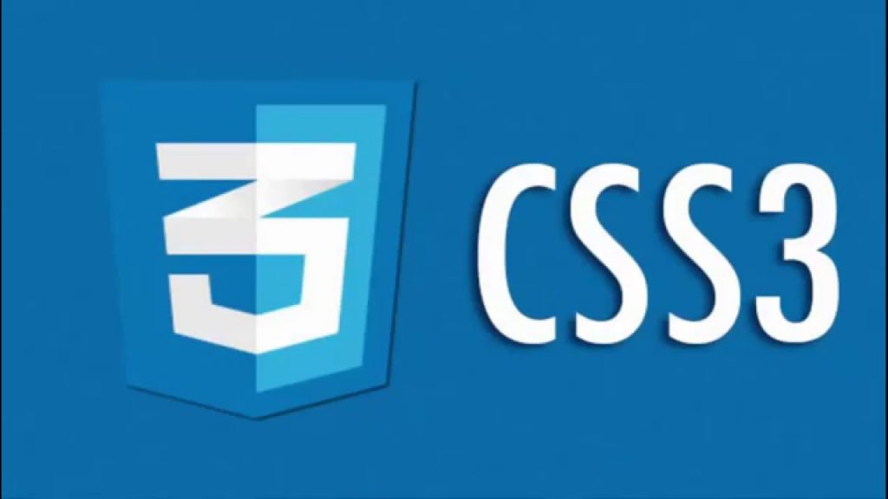
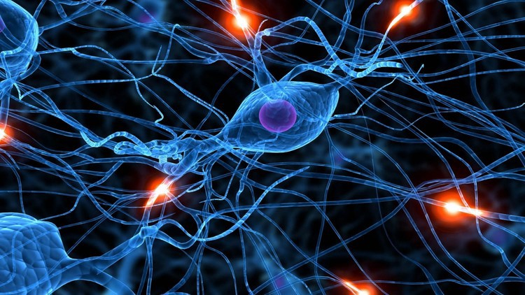
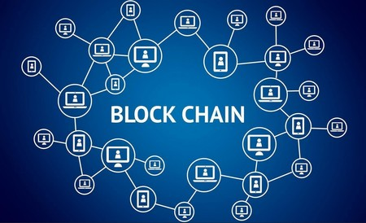
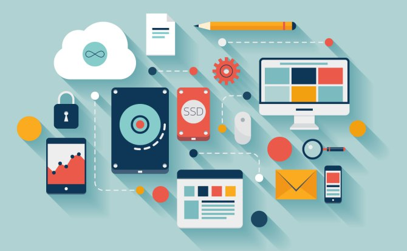
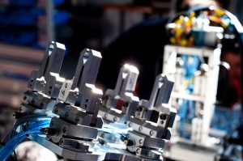
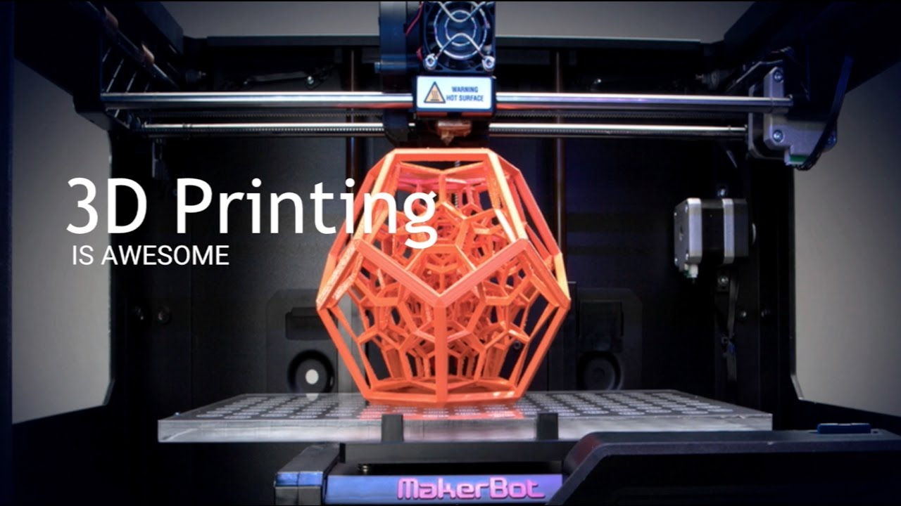

Es un lenguaje markup (de hecho, las siglas de HTML significan Hyper Text Markup Language) usado para estructurar y presentar el contenido para la web. Es uno de los aspectos fundamentales para el funcionamiento de los sitios, pero no es el primero. Es de hecho la quinta revisión del estándar que fue creado en 1990. A fines del año pasado, la W3C la recomendó para transformarse en el estándar a ser usado en el desarrollo de proyectos venideros. Por así decirlo, qué es HTML5 está relacionado también con la entrada en decadencia del viejo estándar HTML 4, que se combinaba con otros lenguajes para producir los sitios que podemos ver hoy en día.
HTML5 establece una serie de nuevos elementos y atributos que reflejan el uso típico de los sitios web modernos. Algunos de ellos son técnicamente similares a las etiquetas. Al no ser reconocido en viejas versiones de navegadores por sus nuevas etiquetas, se recomienda al usuario común actualizar su navegador a la versión más nueva, para poder disfrutar de todo el potencial que provee HTML5..
HTML5 está destinado a sustituir no sólo HTML 4, sino también XHTML 1 y DOM Nivel 2. Esta versión nos permite una mayor interacción entre nuestras páginas web y el contenido media (video, audio, entre otros) así como una mayor facilidad a la hora de codificar nuestro diseño básico. Nuevas etiquetas semánticas para estructurar los documentos HTML, destinadas a remplazar la necesidad de tener una etiqueta que identifique cada bloque de la página.
Para el día de hoy, se encuentran disponibles una gran variedad de herramientas para simplificar el desarrollo en HTML5, útiles tanto para los más expertos como para los que apenas se inician, entre ellas están Initializr, HTML 5 Demos, HTML 5 Visual Cheat Sheet, SwitchToHTML5 Y HTML5 Reset entre otras.
Para mas informacion:

CSS3 es la última evolución del lenguaje de las Hojas de Estilo en Cascada (Cascading Style Sheets), y pretende ampliar la versión CSS2.1. Trae consigo muchas novedades altamente esperadas , como las esquinas redondeadas, sombras, gradientes , transiciones o animaciones, y nuevos layouts como multi-columnas, cajas flexibles o maquetas de diseño en cuadrícula (grid layouts).
Una de las características más impresionantes de CSS 3 es la posibilidad de crear animaciones de los elementos de la página. Todo ello nos abre infinitas posibilidades que antes solo estaban disponibles para los programadores Javascript o diseñadores con Flash. Explora las animaciones CSS que seguro te sorprenderás.
Llegados a este punto, hemos examinado los fundamentos básicos de CSS: cómo dar estilo al texto y cómo manipular las cajas que incluyen tu contenido. Llegó el momento de explorar cómo colocar tus cajas en el lugar que elijas con respecto a la ventana principal y el resto de cajas. Hemos cubierto ya los prerrequisitos necesarios, así que vamos a sumergirnos en la maquetación CSS, fijándonos en diferentes configuraciones de visualización, métodos de maquetación tradicionales que implican floats y posicionamiento, así como a nuevas herramientas de maquetación en voga, como flexbox.
Conozca más sobre el tema en estos videos:
JavaScript (JS) es un lenguaje ligero e interpretado, orientado a objetos con funciones de primera clase, más conocido como el lenguaje de script para páginas web, pero también usado en muchos entornos sin navegador, tales como node.js, Apache CouchDB y Adobe Acrobat. Es un lenguaje script multi-paradigma, basado en prototipos, dinámico, soporta estilos de programación funcional, orientada a objetos e imperativa. Leer más sobre JavaScript..
JavaScript se ha convertido en uno de los lenguajes de programación más populares en internet. Al principio, sin embargo, muchos desarrolladores renegaban del lenguaje porque el público al que va dirigido lo formaban publicadores de artículos y demás aficionados, entre otras razones. La llegada de Ajax devolvió JavaScript a la fama y atrajo la atención de muchos otros programadores.
Javascript es muy fácil de aprender para quien ya conoce lenguajes similares como el C++ o Java, pero, dada su simplicidad sintáctica y su manejabilidad, no es tampoco difícil para quien se acerca por primera vez a este lenguaje. Sin embargo, esto puede ser un arme de doble filo porque la simplicidad se basa en una disponibilidad de objetos limitada, por lo que algunos procedimientos, aparentemente muy sencillos, requieren script bastante complejos.
A principios de los años 90, la mayoría de usuarios que se conectaban a Internet lo hacían con módems a una velocidad máxima de 28.8 kbps. En esa época, empezaban a desarrollarse las primeras aplicaciones web y por tanto, las páginas web comenzaban a incluir formularios complejos.
Para Conocer mas del tema:
Progressive web apps (o aplicaciones web progresivas), es un término que se da a una nueva generación de aplicaciones que incrementan su funcionalidad, conforme las capacidades del dispositivo en el que se ejecutan, incrementan, de ahí la palabra progresiva..
Para conseguirlo, las PWAs se basan en unos conceptos bastante simples: Responsive Web Design, animaciones CSS y frameworks específicos para crear interfaces móviles con aspecto de nativas, Service Workers, App Shell y Manifiesto de aplicación etc. .
Para entender mejor las características de las Progressive Web Apps, tenemos que empezar mirando los principios que condicen al concepto, como una Progressive Web App tiene que ser De confianza, Rápida, Atractiva. Asimismo, una PWA trata sobre todo de ofrecer una buena experiencia de usuario. Es con esta visión centrada en el usuario en mente que los desarrolladores están empezado a fijarse en este set de tecnologías web, herramientas y mejores prácticas para establecer nuevos estándares para la web, a través de los dispositivos.
Las PWAs se basan en conceptos sencillos:
Es la combinación de algoritmos planteados con el propósito de crear máquinas que presenten las mismas capacidades que el ser humano. Una tecnología que todavía nos resulta lejana y misteriosa, pero que desde hace unos años está presente en nuestro día a día a todas horas..
El concepto de IA es aún demasiado difuso. Contextualizando, y teniendo en cuenta un punto de vista científico, podríamos definir esta ciencia como la encargada de imitar el cerebro, que no el cuerpo, de una persona en todas sus funciones. Estas pueden ser las ya existentes en el humano o bien otras novedosas e incorporadas en el desarrollo de una máquina inteligente
El concepto de Inteligencia Artificial, también conocido por las siglas AI, se le debe al informático estadounidense John McCarthy, quien en el año 1956 lo pronunció por primera vez en una conferencia causando un gran impacto en el ámbito de la tecnología. A partir de ese entonces, el concepto se diseminó fantásticamente por el mundo.
La Inteligencia Artificial ha sido usada en un amplio número de campos, incluyendo diagnóstico médico, comercio de acciones, control robótico, leyes, percepción remota, descubrimientos científicos y juguetes. Sin embargo muchas aplicaciones de la IA no son percibidas como tal: "Mucha IA se han filtrado en aplicaciones generales, comúnmente sin ser llamadas IA porque una vez que algo se vuelve suficientemente útil y común deja de ser considerado IA," Nick Bostrom reports. .
Mas informacion del tema en estos videos
Machine Learning es una disciplina científica del ámbito de la Inteligencia Artificial que crea sistemas que aprenden automáticamente. Aprender en este contexto quiere decir identificar patrones complejos en millones de datos. La máquina que realmente aprende es un algoritmo que revisa los datos y es capaz de predecir comportamientos futuros. Automáticamente, también en este contexto, implica que estos sistemas se mejoran de forma autónoma con el tiempo, sin intervención humana.
Los diferentes algoritmos de Aprendizaje Automático se agrupan en una taxonomía en función de la salida de los mismos. Algunos tipos de algoritmos son Aprendizaje supervisado, Aprendizaje no supervisado, Aprendizaje semisupervisado y Aprendizaje por refuerzo etc.
Deep learning Aprendizaje profundo (en inglés, deep learning) es un conjunto de algoritmos de clase aprendizaje automático (en inglés, machine learning) que intenta modelar abstracciones de alto nivel en datos usando arquitecturas compuestas de transformaciones no lineales múltiples. El aprendizaje profundo es parte de un conjunto más amplio de métodos de aprendizaje automático basados en asimilar representaciones de datos. Una observación (por ejemplo, una imagen) puede ser representada en muchas formas (por ejemplo, un vector de píxeles).
En efecto, el Deep Learning busca la resolución de problemas que plantea el mundo real. Un enfoque práctico que se lleva a cabo a partir de redes neuronales profundas que imitan el modo de funcionar de nuestro cerebro.

Las redes neuronales (también conocidas como sistemas conexionistas) son un modelo computacional basado en un gran conjunto de unidades neuronales simples (neuronas artificiales), de forma aproximadamente análoga al comportamiento observado en los axones de las neuronas en los cerebros biológicos. Cada unidad neuronal está conectada con muchas otras y los enlaces entre ellas pueden incrementar o inhibir el estado de activación de las neuronas adyacentes.
A pesar de su nombre, las redes neuronales no tienen un concepto demasiado complicado detrás de ellas. El nombre, como podéis imaginar, viene de la idea de imitar el funcionamiento de las redes neuronales de los organismos vivos: un conjunto de neuronas conectadas entre sí y que trabajan en conjunto, sin que haya una tarea concreta para cada una. Con la experiencia, las neuronas van creando y reforzando ciertas conexiones para "aprender" algo que se queda fijo en el tejido..
Las criptomonedas son monedas virtuales. Pueden ser intercambiadas y operadas como cualquier otra divisa tradicional, pero están fuera del control de los gobiernos e instituciones financieras. Existe un gran número de criptodivisas disponibles, todas con sus propias características y aplicaciones. Las que tienen mayor capitalización de mercado son -al menos por ahora- una minoría, que incluye bitcoin, bitcoin cash, ether, litecoin, ripple y dash.
En el año 2008 con el gran paso que la tecnología aporta al mundo, llegan las criptomonedas, estas son monedas virtuales, sin control alguno, es decir: son descentralizadas y ningún gobierno o estado político posee un control sobre ellas, esto aporta una gran cantidad de beneficios a la sociedad.
En los sistemas de criptomonedas, se garantiza la seguridad, integridad y equilibrio de sus estados de cuentas (contabilidad) por medio de un entramado de agentes (transferencia de archivo segmentada o transferencia de archivo multifuente) que se verifican (desconfían) mutuamente llamados mineros, que son, en su mayoría, público en general y protegen activamente la red (el entramado) al mantener una alta tasa de procesamiento de algoritmos, con la finalidad de tener la oportunidad de recibir una pequeña propina, que se reparte de manera aleatoria.
Parece que el mundo de las criptomonedas y el dinero digital ha llegado para quedarse. Aunque algunos veían (y lo siguen viendo) con algo de escepticismo el sistema de monedas virtuales, podemos decir que las criptodivisas ya son una realidad y, algunas como el Bitcoin se presentan como una serie alternativa al sistema financiero mundial, tal y como lo conocemos en la actualidad.
Conozca más sobre el tema en estos videos

Una cadena de bloques (block chain), también conocida como libro de contabilidad distribuido (distributed ledger), es una base de datos distribuida que registra bloques de información y los entrelaza para facilitar la recuperación de la información y la verificación de que ésta no ha sido cambiada. Los bloques de información se enlazan mediante apuntadores hash que conectan el bloque actual con el anterior y así sucesivamente hasta llegar al bloque génesis.
En el campo de las criptomonedas la cadena de bloques se usa como notario público no modificable de todo el sistema de transacciones a fin de evitar el problema de que una moneda se pueda gastar dos veces. Por ejemplo es usada en Bitcoin, Ethereum, Dogecoin y Litecoin, aunque cada una con sus particularidades.
El proceso es relativamente sencillo, pero como decimos implica a más personas. Ahora Mariano y Luis no están solos, y formarán parte de un gran grupo de usuarios que se encargan de comprobar que todo el proceso se produce como debe producirse.
Las posibles aplicaciones de la tecnología de la cadena de bloques en las finanzas son amplias entre ellas están:
Más informacion sobre el tema en estos videos
La ciberseguridad es la práctica de defender las computadoras y los servidores, los dispositivos móviles, los sistemas electrónicos, las redes y los datos de ataques maliciosos. También se conoce como seguridad de tecnología de la información o seguridad de la información electrónica. El término es amplio y se aplica a numerosos elementos, desde seguridad informática hasta recuperación ante desastres y educación del usuario final.
Cuanto más interconectado está el mundo digital, más relevante se vuelve la seguridad. El concepto principal en este contexto es la ciberseguridad, pues en Internet, tanto las empresas como los particulares están expuestos a una gran cantidad de peligros que pueden causar daños considerables. Por ello, el tema de la ciberseguridad, también conocida como seguridad digital, es ahora más actual que nunca y no solo hace referencia a la seguridad en Internet, sino también a otros aspectos y sectores de las tecnologías de la información y de la comunicación.
La seguridad informática debe establecer normas que minimicen los riesgos a la información o infraestructura informática. Estas normas incluyen horarios de funcionamiento, restricciones a ciertos lugares, autorizaciones, denegaciones, perfiles de usuario, planes de emergencia, protocolos y todo lo necesario que permita un buen nivel de seguridad informática minimizando el impacto en el desempeño de los trabajadores y de la organización en general y como principal contribuyente al uso de programas realizados por programadores.
La economía digital está aquí y está evolucionando, y requiere que las empresas administren el valor de su negocio aprovechando la tecnología para conectar a usuarios, dispositivos, datos, bienes y servicios. Para competir exitosamente, las empresas están adoptando nuevos modelos de conectividad e intercambio de información como la nube, así como habilitando el Internet de las Cosas para ser más ágiles y responder mejor a las necesidades y demandas de los clientes y del mercado. Como tal, la infraestructura tecnológica utilizada por las empresas está evolucionando.
Cuando hablamos de realidad virtual, Según la definición regularizada, podemos tomarla como “Representación de escenas o imágenes de objetos producida por un sistema informático, que da la sensación de su existencia real. A nuestro modo de ver, la realidad virtual (VR) consiste en la inmersión sensorial en un nuevo mundo, basado en entornos reales o no, que ha sido generado de forma artificial, y que podemos percibir gracias a unas gafas de realidad virtual y sus accesorios (cascos de audio, guantes, etc…).
La realidad virtual (RV) es un entorno de escenas u objetos de apariencia real. La acepción más común se refiere a un entorno generado mediante tecnología informática, que crea en el usuario la sensación de estar inmerso en él. .
La realidad virtual puede ser de dos tipos: inmersiva o no inmersiva y semiinmersiva. Los métodos inmersivos de realidad virtual con frecuencia se ligan a un ambiente tridimensional creado por un ordenador, el cual se manipula a través de cascos, guantes u otros dispositivos que capturan la posición y rotación de diferentes partes del cuerpo humano. La realidad virtual no inmersiva utiliza también el ordenador y se vale de medios como el que actualmente nos ofrece Internet, en el cual se puede interactuar en tiempo real con diferentes personas en espacios y ambientes que en realidad no existen sin la necesidad de dispositivos adicionales al ordenador. Este caso se acerca a la navegación, a través de la cual se ofrece al sujeto la posibilidad de experimentar (moverse, desplazarse, sentir) determinados espacios, mundos, lugares, como si se encontrase en ellos.
Realidad inmersiva, realidad semi-inmersiva y realidad no inmersiva son las categorías que existen. Con grandes diferencias entre las tres, pero todas con un mismo objetivo. Realidad virtual es un término muy en boga en los últimos años. Los avances conseguidos en esta técnica hacen que sea una de las tecnologías del momento. No en vano, fue en 1930 cuando se creó el primer simulador de vuelo, con el que militares inexpertos a pilotar los últimos modelos de aviones se entrenaban para ello. .
La Realidad Aumentada (RA) es una tecnología que permite superponer elementos virtuales sobre nuestra visión de la realidad. Cada vez más demandada, en 2020 se convertirá en un negocio que roce los 120.000 millones de dólares a nivel mundial.
La realidad aumentada consiste en combinar el mundo real con el virtual mediante un proceso informático, enriqueciendo la experiencia visual y mejorando la calidad de comunicación. Gracias a esta tecnología se puede añadir información visual a la realidad, y crear todo tipo de experiencias interactivas: Catálogos de productos en 3D, probadores de ropa virtual, video juegos y mucho más.
Los dispositivos de realidad aumentada normalmente constan de unos cascos o gafas y un sistema de visualización para mostrar al usuario la información virtual que se añade a la real. El headset lleva incorporado sistemas de GPS, necesarios para poder localizar con precisión la situación del usuario. Los dos principales sistemas de visualización empleados son la pantalla óptica transparente y la pantalla de mezcla de imágenes. Tanto uno como el otro usan imágenes virtualesque se muestran al usuario mezcladas con la realidad o bien proyectadas directamente en la pantalla.
El inconveniente que representa para el comercio electrónico la incapacidad del cliente para probar o tocar sus productos en venta puede ser eliminada con la realidad aumentada. Gracias a esta tecnología es posible desarrollar nuevas formas de presentar un producto tal y como sucede con los probadores virtuales. Estas aplicaciones permiten que el consumidor pruebe de forma casi real un producto antes de proceder a la compra.
La Realidad Mixta o Realidad Híbrida es la fusión de los mundos real y virtual para producir nuevos entornos y visualizaciones donde los objetos físicos y digitales coexisten e interactúan en tiempo real. Podríamos decir que la Realidad Mixta abarca lo mejor de los mundos de la Realidad Virtual y la Aumentada.
En la realidad mixta se trata de llevar el mundo real al mundo virtual (https://es.wikipedia.org/wiki/Mundo_virtual) . La idea es generar un modelo 3D de la realidad y sobre él superponer información virtual. De esta forma, se podrán combinar ambas realidades para agregar contenido adicional de valor para el usuario de MR.
Como ya se ha dicho, la realidad mixta permite la incorporación de objetos gráficos generados por ordenador en una escena tridimensional del mundo real o bien la incorporación de objetos reales en un mundo virtual.
Videos relacionados con el tema

La internet de las cosas es un sistema de dispositivos de computación interrelacionados, máquinas mecánicas y digitales, objetos, animales o personas que tienen identificadores únicos y la capacidad de transferir datos a través de una red, sin requerir de interacciones humano a humano o humano a computadora.
Como ya hemos dicho, el truco en todo esto está en los sistemas embebidos. Se trata de de chips y circuitos que comparados con, por ejemplo, un smartphone, podrían parecernos muy rudimentarios, pero que cuentan con todas las herramientas necesarias para cumplir labores especializadas muy especificas. No hay un tipo específico de objetos conectados al Internet de las cosas. En lugar de eso se les puede clasificar como objetos que funcionan como sensores y objetos que realizan acciones activas. Claro, los hay que cumplen ambas funciones de manera simultánea.
Las aplicaciones para dispositivos conectados a internet son amplias. Múltiples categorizaciones han sido sugeridas, la mayoría están de acuerdo en separar las aplicaciones en tres principales ramas de aplicación: consumidores, empresarial, e infraestructura. George Osborne, ex miembro del gabinete encargado de finanzas, propone que la IoT es la próxima etapa en la revolución de la información, haciendo referencia a la interconectividad de todo, desde el transporte urbano hasta dispositivos médicos, pasando por electrodomésticos.
Decubre más del tema en estos videos

La mecatrónica es una disciplina que une la ingenieria mecánica, ingenieria electronica, ingenieria de control e ingenieria informática, y sirve para diseñar y desarrollar productos que involucren sistemas de control para el diseño de productos o procesos inteligentes, lo cual busca crear maquinaria más compleja para facilitar las actividades del ser humano a través de procesos electrónicos en la industria mecánica, principalmente. Debido a que combina varias ingenierías en una sola, su punto fuerte es la versatilidad.
La Ingeniería Mecatrónica combina mecánica, electrónica, informática y otras áreas. Es así que las aplicaciones de esta carrera las veremos en muchos campos de nuestra vida diaria, como por ejemplo Tecnología en casa, Mecánicos de automóviles, Juegos mecánicos, Construcción civil entre otras.
Entendiendo que la mecatrónica abarca disciplinas muy amplias y complejas puede decirse que tiene muchos campos de aplicación. De hecho, la mecatrónica pretende ser esa disciplina o Ingeniería en la que los productos se fabriquen teniendo en cuenta todas las ingenierías y no estando separadas como tradicionalmente. Su punto fuerte es la versatilidad para crear mejores productos, procesos o sistemas. La Mecatrónica no es un concepto nuevo o una ingeniera nueva, sino, la síntesis de ciertas áreas de ingeniería.
La designación del término 'Meca-trónica' fue incluida en el año 1969 por Tetsuro Mori, ingeniero de la compañía japonesa Yaskawa. Dicha palabra se derivó de la sinergia de todas sus ingenierías (mecánica, electrónica, informática e ingeniería de control), dándole origen a un sistema más inteligente y digitalizado.
Videos relacionados con el tema:

La impresión 3D, también conocida como manufactura por adición, es un proceso por el cual se crean objetos físicos colocando un material por capas en base a un modelo digital. Todos los procesos de impresión 3D requieren que el software, el hardware y los materiales trabajen en conjunto. La tecnología de impresión 3D puede utilizarse para crear todo tipo de cosas, desde prototipos y piezas simples hasta productos finales altamente técnicos, como piezas para aeronaves (Inglés), edificios ecológicos, implantes médicos que pueden salvar vidas e incluso órganos artificiales que se producen con capas de células humanas.
En los años 1976 se desarrollaron equipos y materiales de fabricación de aditivos tempranos. En 1981, Hideo Kodama, del Instituto Municipal de Investigaciones Industriales de Nagoya, inventó dos métodos de fabricación AM de un modelo de plástico tridimensional con un polímero fotoendurecible, en el que el área de exposición a los rayos UV era controlada por un patrón de máscara o transmisor de fibra de barrido. Pero el 16 de julio de 1983, Alain Le Méhauté, Olivier de Witte y Jean Claude André presentaron su patente para el proceso de estereolitografía.6 Fue tres semanas antes de que Chuck Hull presentase su propia patente de estereolitografía. La aplicación de los inventores franceses fue abandonada por la compañía General Electric francesa (ahora Alcatel-Alsthom) y CILAS (The Laser Consortium). La razón aducida fue "por falta de perspectiva empresarial".
Es entendible que, con tanta información dando vueltas, nos cueste filtrar las cosas más relevantes y sigamos teniendo miles de dudas acerca de la impresión 3D. Sin embargo, tenemos la suerte de que el acercamiento a esta tecnología se está volviendo cada vez más sencillo, mientras que van apareciendo nuevos recursos. Para ayudar un poco a “aceitar” esta iniciación.
Las impresoras 3D no pueden utilizar cualquier material, hay una gran variedad para su impresión, como: transparentes, de colores, opacos, flexibles, rígidos, de alta temperatura y resistencia. Este tipo de materiales satisfacen necesidades de manera visual y táctil, además, son muy resistentes y con la fuerza necesaria que los prototipos requieren. El diseño de nuestro producto nos dará paso a escoger el material que debemos utilizar, la impresora y el proceso por el cual se imprimirá.
Más informacion sobre el tema en estos videos:
Las redes de quinta generación (5G) están actualmente en desarrollo y saldrán al mercado a comienzos del 2020. En comparación con la tecnología 4G LTE actual, la 5G tiene como objetivo llegar a alta velocidad (1 Gbps), baja potencia y baja latencia (1ms o menos), para el IoT masivo, el Internet táctil y la robótica.
Ahora bien, llegamos al punto donde comprobaremos que nos ha de ofrecer 5G a nivel de movilidad para saber en detalle si es o no viable esta nueva generación móvil. Con estas características sin lugar a dudas 5G revolucionará la forma como navegamos y usamos hoy en día la red y todo se debe al crecimiento notable que tienen los servicios móviles. Un punto vital de las redes 5G es su capacidad para brindar acceso a todos los dispositivos ubicados en el rango de conexión, y lo mejor de todo es que no se saturaran los canales ni veremos los errores frecuentes de caída de señal, etc.
Ventaja: Era de esperar. Es una de las mejoras que todas estamos esperando. Cuando se produce una optimización en este sentido, la recibimos con júbilo, pero cuando te acostumbras a ella, ¿no te pasa que siempre quieres más? Pues bien, con la tecnología 5G,navegaremos a 5000 megabites por segundo. Esto significa básicamente que ¡volaremos! La velocidad será unas 20 veces mayor de la que teníamos con la 4G. Desventaja: La revolución es tal, que los dispositivos anteriores, incluso actuales, no podrán asumir la velocidad y la cantidad de información que circulará. Por tanto, nos veríamos obligadas a sustituirlos. Obviamente, no sin la duda de si los nuevos estarán lo suficientemente preparados.
La compañía sueca Ericsson aún no ha conseguido alcanzar velocidades de 5 Gbps reales, con demostraciones en directo del estándar previo a la tecnología de red (preestándar) 5G. En noviembre de 2014, Huawei anuncia la firma de un acuerdo con la operadora móvil rusa Megafon para estandarizar y desarrollar redes 5G de prueba, en vistas a la Copa Mundial de Fútbol de 2018. En febrero de 2017, la Unión Internacional de Telecomunicaciones (UIT) dependiente de Naciones Unidas reveló alguna de las especificaciones de la tecnología 5G. Entre ellas se incluyen: velocidades de descarga mínimas de 20 Gbps y 10 Gbps de subida, y una latencia de 4 ms. Se pretende optimizar los dispositivos para hacerlo lo más eficiente posible para el Internet de las cosas (IoT, por sus siglas en inglés). Está previsto que todo el mundo utilice esa conectividad en 2025.
HTML5 Es uno de los aspectos fundamentales para el funcionamiento de los sitios, pero no es el primero. Es de hecho la quinta revisión del estándar que fue creado en 1990. A fines del año pasado, la W3C la recomendó para transformarse en el estándar a ser usado en el desarrollo de proyectos venideros. .
JavaScript es un lenguaje ligero e interpretado, orientado a objetos con funciones de primera clase, más conocido como el lenguaje de script para páginas web, pero también usado en muchos entornos sin navegador, tales como node.js, Apache CouchDB y Adobe Acrobat.
Progresive Webs Apps es un término que se da a una nueva generación de aplicaciones que incrementan su funcionalidad, conforme las capacidades del dispositivo en el que se ejecutan, incrementan, de ahí la palabra progresiva.
Inteligencia Artificial es la combinación de algoritmos planteados con el propósito de crear máquinas que presenten las mismas capacidades que el ser humano. Una tecnología que todavía nos resulta lejana y misteriosa, pero que desde hace unos años está presente en nuestro día a día a todas horas.
Criptomoneda son monedas virtuales. Pueden ser intercambiadas y operadas como cualquier otra divisa tradicional, pero están fuera del control de los gobiernos e instituciones financieras. Existe un gran número de criptodivisas disponibles, todas con sus propias características y aplicaciones.
Blockchain es una base de datos distribuida que registra bloques de información y los entrelaza para facilitar la recuperación de la información y la verificación de que ésta no ha sido cambiada..
Cyberseguridad es la práctica de defender las computadoras y los servidores, los dispositivos móviles, los sistemas electrónicos, las redes y los datos de ataques maliciosos. También se conoce como seguridad de tecnología de la información o seguridad de la información electrónica.
Realidad virtual Según la definición regularizada, podemos tomarla como “Representación de escenas o imágenes de objetos producida por un sistema informático, que da la sensación de su existencia real. A nuestro modo de ver, la realidad virtual (VR) consiste en la inmersión sensorial en un nuevo mundo
Realidad Aumentadaes una tecnología que permite superponer elementos virtuales sobre nuestra visión de la realidad. Cada vez más demandada, en 2020 se convertirá en un negocio que roce los 120.000 millones de dólares a nivel mundial
Realidad Mixta es la fusión de los mundos real y virtual para producir nuevos entornos y visualizaciones donde los objetos físicos y digitales coexisten e interactúan en tiempo real. Podríamos decir que la Realidad Mixta abarca lo mejor de los mundos de la Realidad Virtual y la Aumentada.
El Internet de las Cosas(IOT) es un sistema de dispositivos de computación interrelacionados, máquinas mecánicas y digitales, objetos, animales o personas que tienen identificadores únicos y la capacidad de transferir datos a través de una red, sin requerir de interacciones humano a humano o humano a computadora.
La Mecatrónica es una disciplina que une la ingenieria mecánica, ingenieria electronica, ingenieria de control e ingenieria informática, y sirve para diseñar y desarrollar productos que involucren sistemas de control para el diseño de productos o procesos inteligentes.
3d Printing es un proceso por el cual se crean objetos físicos colocando un material por capas en base a un modelo digital. Todos los procesos de impresión 3D requieren que el software, el hardware y los materiales trabajen en conjunto.
Tecnologia 5g es una evolucion de la 4g, eso quiere decir que la transferencia de informacion va hacer mucho mas rapido. Esta tecnologia esta prevista que pueda ser utilizada por todo el mundo en el 2025son las siglas utilizadas para referirse a la quinta generación de tecnologías de telefonía móvil. Es la sucesora de la tecnología 4G. Actualmente se encuentra sin estandarizar y las empresas de telecomunicación están desarrollando sus prototipos. Está previsto que su uso común sea en 2020..
15-EIST-1-011